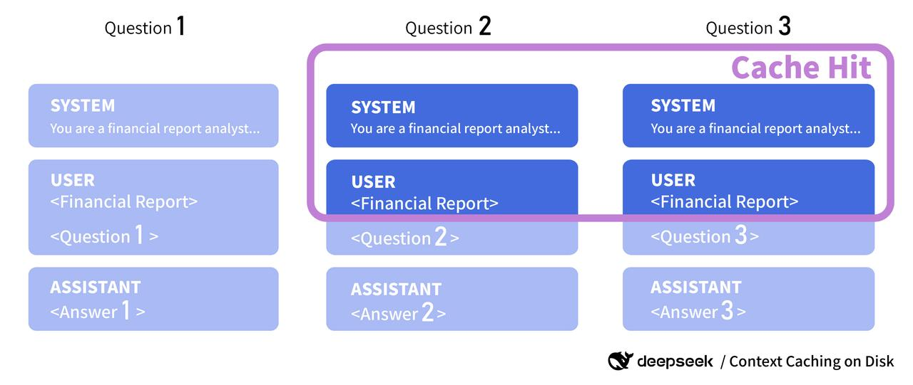
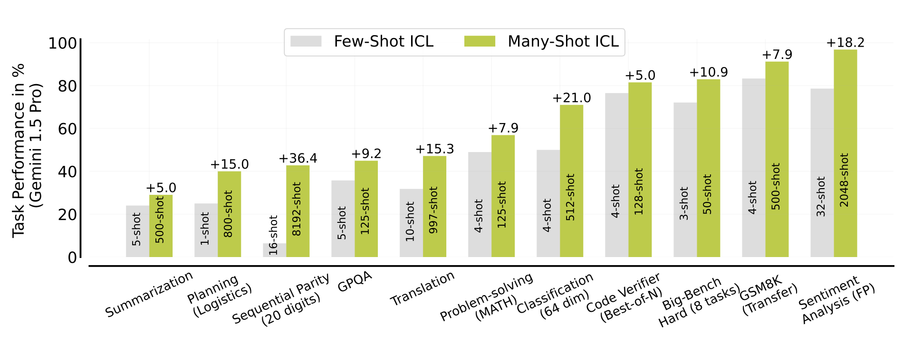
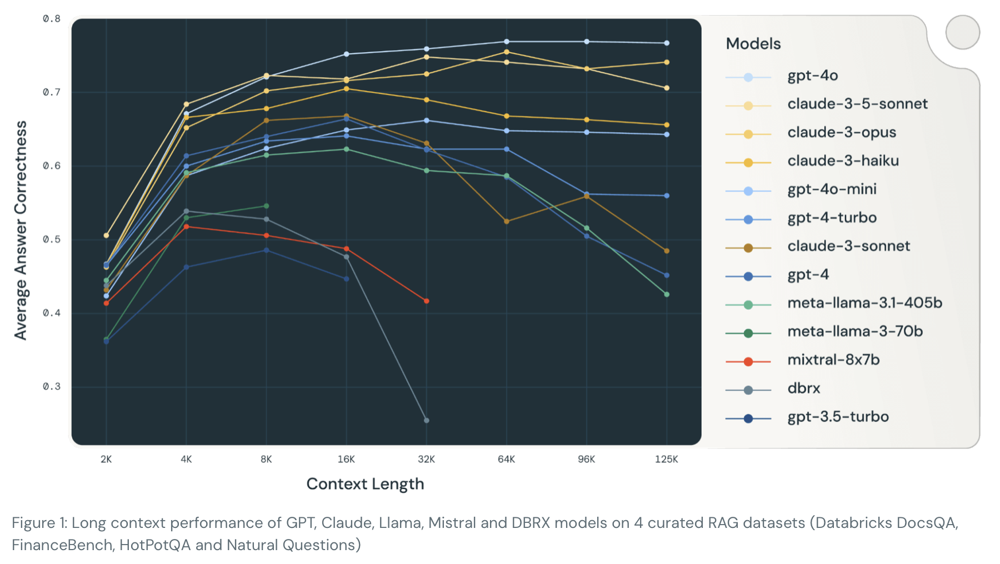
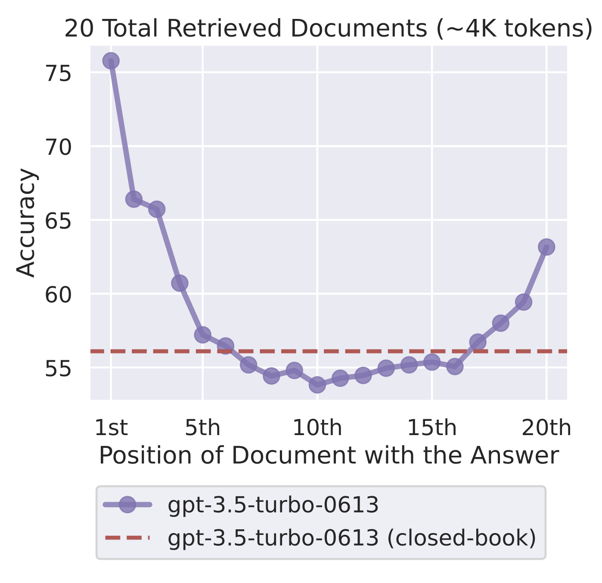

Prompts are the key to guide LLMs for any task, from a chatbot to a text classifier. Longer prompts are usually better than shorter ones, as I’ll argue below. There is a tradeoff, though: each interaction with a long prompt has a longer input sequence, which increases inference cost and latency. Further, a long prompt takes up more of the model’s context window, leaving less for user interaction. But both of these concerns are becoming less relevant with recent developments.
Long prompts are getting cheaper
There are two developments that keep bringing down the cost of long prompts:
Decrease in input token cost on API platforms like OpenAI, Anthropic and others. At launch of gpt-3.5-turbo in March 2023, OpenAI charged $2 for 1 million input tokens. By August 2024, it’s $0.15 for gpt-4o-mini, a more capable model. This is a 92.5% reduction in cost. It reflects the fierce competition and the increasing efficiency of inference software, a fall in GPU prices and advances in quantization. Similar trends can be observed in inference cost for open source models, though it’s harder to reach the same economies of scale as the big platforms.
Context caching, meaning that the model doesn’t have to recompute the prefix of the prompt for each interaction. This is also called prompt caching. It uses a KV cache (see a good explanation by Log (2023)) to skip the calculation of the attention keys and values for cached tokens. Originally, this was only used within a single generation task to avoid having to re-read all tokens for each additional token generated. However, it can also be used across different generations. It’s integrated in vLLM (Kwon et al. 2023), an inference library that can serve many popular open source models. Since June 2024, three API platforms have also added this feature: DeepSeek, Google Gemini and Anthropic.

| Platform | Model | Regular price | Caching price | Savings |
|---|---|---|---|---|
| DeepSeek | deepseek-chat | $0.14 / Mtok | $0.014 / Mtok for cache read | 90% |
| Anthropic | Claude 3.5 Sonnet | $3.00 / Mtok | $3.75 / MTok for cache write, $0.30 /Mtok for cache hits | 90% |
| Gemini | Gemini 1.5 Pro | $3.50 / Mtok | Free cache read, $4.50 / Mtok per hour for storage | Variable |
The table above compares the cost savings from prompt caching on different platforms. Mtok stands for million tokens.
The pricing models are quite different. DeepSeek offers the best savings at 90% reduction on cache hit and no storage fees. Keep in mind that this is not a frontier model. The documentation says the cache is cleared after a few hours. Further, the feature is active by default and doesn’t require a change in code. This is different at Anthropic where the cache has to be explicitly enabled and writing to it carries a higher cost than a normal input token. As of August 31, the cache only has a 5 minute time to live (TTL), making it only useful apps with high frequency of the same prompt. Gemini charges for storage and gives control over the TTL with a default of one hour and requires explicit enabling.
Why is it so expensive to store 1 million tokens for one hour? The reason is that the KV cache takes a surprising amount of memory. The formula for the memory per token is:
\[ \text{memory} = n_{tokens} * 2 * n_{heads} * d_{head} * n_{layers} * \text{precision (bytes)} \]
The 2 represents the key and value vectors, \(n_{heads}\) is the number of attention heads, \(d_{head}\) is the dimension of the attention head, \(n_{layers}\) is the number of layers and precision is the number of bytes used to store a single weight. Note that this doesn’t include optimizations like sparsity, quantizastion or grouped query attention (Ainslie et al. 2023).
For a 1024 token sequence on a 175B GPT-3 model with 96 heads with 128 dimensions and 96 layers at FP16 precision, this results in
\[ 1024 * 2 * 96 * 128 * 96 * 16 \text{ bytes} = 38.65 \text{ GB} \]
This has to be stored in GPU memory to be accessible for the model.
But while $4.5 / Mtok might seem expensive for just one hour, if that input token is used at least twice in that hour, it’s already cheaper than the regular input token price. The savings are multiplied with each additional use. For use of open models on your own GPUs, this means that allocating a portion of your GPU memory to cache can be an excellent investment. It also means that for same-y inference requests, GPU memory matters more than its speed.
Context sizes are getting larger
Current frontier models have a context length of at least 128,000 tokens - equivalent to roughly 100,000 words or a 400 page novel.
| Provider | Model | Context size |
|---|---|---|
| Gemini 1.5 Pro | 2m | |
| Anthropic | Claude 3.5 Sonnet | 200k |
| Alibaba | Qwen2 72B | 128k |
| Meta | Llama 3.1 Instruct 405B | 128k |
| Mistral | Mistral Large 2 | 128k |
| OpenAI | GPT-4o | 128k |
Source: Artificialanalysis.ai
In contrast, early models like gpt-3.5-turbo in March 2023 only had a context size of 4096 tokens. In a RAG context, this means that more text chunks can be included in the prompt and in a chat context, more questions and answers can be included before the oldest ones are evicted. The problem that a prompt doesn’t fit into the context window is effectively solved for almost all applications.
Longer prompts are often better
Ok, so long prompts are getting cheaper. But how does a longer prompt help?
1. More detailed guidelines
A longer prompt can provide more context to the model, letting it perform a task more accurately or represent a brand or character more faithfully. Consider including information like this:
- Background information about the website, app or task that the model is embedded in.
- Behavioral constraints, like not using certain words or phrases. For example telling the prompt to avoid starting answers with “Certainly!”, to make it sound less AI-like.
- Style guidelines, like using a certain tone or level of formality, whether to address the user by first or last name, or to use emojis.
- Characterization, giving the model a personality or role to play. For example, a chatbot for a bank could be characterized as a friendly and professional customer service agent.
- A more detailed task description, like a list of steps to follow or a description of the desired output.
- Information about the user, like their name, location, or preferences.
- A translation glossary, if the model is used in a multilingual setting.
If you’re looking for inspiration for a chatbot prompt, check the recently revealed prompts for Anthropic’s Claude.
2. Many-shot in-context learning
Few-shot examples can be included in the prompt for in-context learning (ICL). These examples can teach the model about the rules for the task, the desired output format, intermediate reasoning steps and handling of edge cases. Commonly this is done with 1 to 5 examples, but with prefix caching it’s possible to include 50, 100 or even more examples.

Agarwal et al. (2024) ran this experiment with Gemini 1.5 Pro across several tasks. Many-shot ICL outperformed few-shot learning in all cases. For sentiment analysis they went as far as 2048 examples in the prompt, achieving an increase in 18.2 percentage points over a 32-shot prompt. In many of their experiments the limiting factor wasn’t the context size, but the number of available examples.
This allows a prompting approach become closer to fine-tuning, but without the need for training or a model store. Bertsch et al. (2024) made the comparison between many-shot ICL and LoRA (Hu et al. 2021) on 5 classification tasks and conclude that “finetuning is more data-hungry than ICL”. In their experiments with Llama2-7b, many-shot prompting outperformed fine-tuning up to about 1000 examples (see figure 2 of their paper).
3. More RAG context
A key design parameter in retrieval augmented generation (RAG) is the number of text chunks to retrieve from a source. With a larger context size, more and longer text chunks can be included in the prompt. This increases the likelihood that the information required to answer the query is present in the prompt.
Leng et al. (2024) tested RAG answer correctness on 13 open source and proprietary LLMs.

As the graph above shows, answer correctness increased with longer context all models up to 4k tokens and up to 32k tokens for most models. This is driven by the boost in retrieval (see experiment 1 in the article).
However, the “lost in the middle” problem can occur, a phenomemon first found by (Liu et al. 2023), where information presented in the middle is not used as well as information presented at the beginning or end. It can be measured by the “needle in a haystack” method, meaning that a piece of information is hidden in a long text and the model has to find it. The longer the text, the harder it is to find the information. The RULER benchmark by (Hsieh et al. 2024) extended this to more complex tasks and introduced the concept of an effective context length, which is shorter than the technical context length of a model.

Retrieving more information also increases the risk of including irrelevant information. If chunk ranking works correctly, lower ranking chunks are less likely to be relevant and adding them reduces the density of relevant information. Levy, Jacoby, and Goldberg (2024) found that irrelevant information isn’t neutral, it’s detrimental to model performance on a question-answering task.
4. More functions for agentic models
Models used as agents are given function signatures in a JSON schema. Each of these has to be sent to the model as part of the prompt. The more functions and the more arguments they have, the longer the prompt. With lower prompt costs, it’s becoming more economical to have agents with many different and more detailed functions in their repertoire.
Common functions include:
- Send a task to a sub-agent
- Web search
- Query a database by using text-to-SQL
- Redirect to a human agent
- Call a REST API, e.g. to send an email or schedule a meeting
- Execute code in Python, JavaScript or another language
The Berkeley function calling leaderboard (Yan et al. 2024) offers detailed benchmarks for a variety of function calling tasks.
Conclusion: revisit your prompts
In 2023, the cost of long prompts was a major concern. Each input token was precious. This has changed with the introduction of prompt caching and a massive reduction in input token cost. It’s worth reevaluating prompts and consider whether adding more information would benefit the application.
About the title: 5-7-5 refers to the syllable count in a haiku, a form of short poetry from Japan.